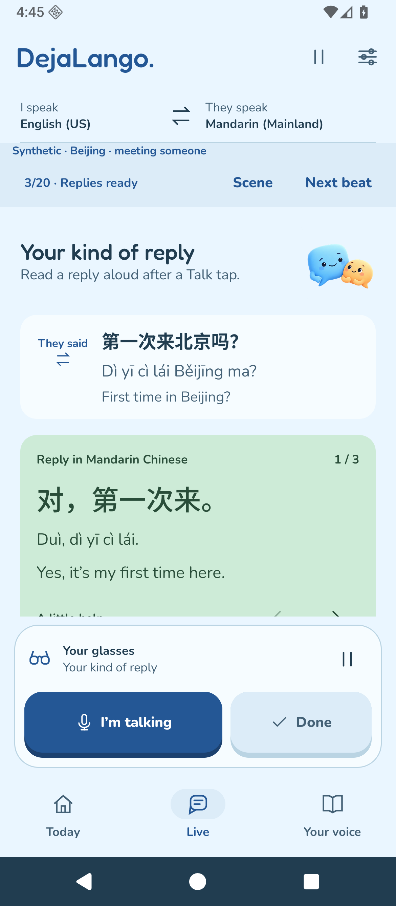
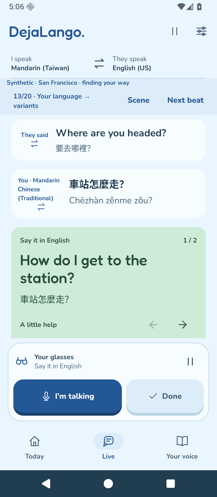
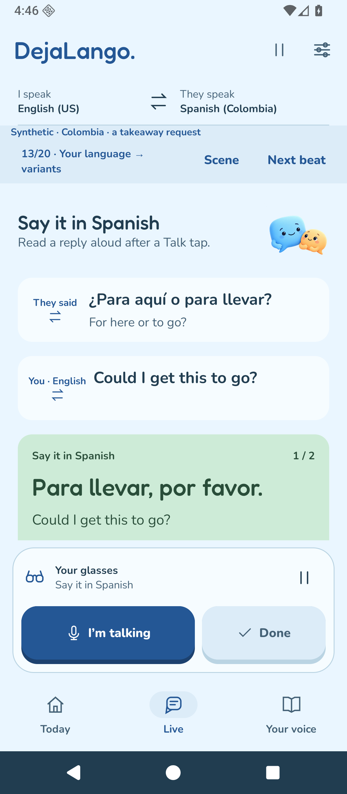

DejaLango.
You, in any language.
Beijing
Meeting someone · Simplified Mandarin

San Francisco
Finding your way · Mandarin → English

Colombia
A takeaway request · Spanish

Authored travel examples · Synthetic native walkthroughs